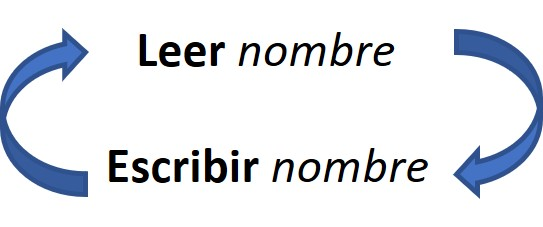

Bueno, ya tenemos un algoritmo que nos saluda con nuestro nombre. Pero no seamos egoístas, hagamos uno que también salude a algunos amigos.
Digamos que, por ahora, pueda saludarnos a nosotros (a cada uno que lo ejecute) y a otros dos amigos.
Podríamos entonces escribir un algoritmo con las siguientes instrucciones:
Pseudocódigo
PROCESO Nombre_2
DEFINIR nombre1, nombre2, nombre3 COMO CARACTER
ESCRIBIR "Hola, ¿cómo te llamás?"
LEER nombre1
ESCRIBIR "Hola ", nombre1, ", un gusto conocerte"
ESCRIBIR " Hola, ¿cómo te llamás?"
LEER nombre2
ESCRIBIR "Hola ", nombre2, ", un gusto conocerte"
ESCRIBIR " Hola, ¿cómo te llamás?"
LEER nombre3
ESCRIBIR "Hola ", nombre3, ", un gusto conocerte"
ESCRIBIR "Es un gusto conocerlos a todos :-) "
FINPROCESO
Observando...
Bien, quizá hayan notado que el bloque necesario para leer nuestro nombre y escribirlo en el saludo, como se ve en el algoritmo Nombre_1, se repite tres veces en el algoritmo Nombre_2.
Se repite para poder leer y escribir nuestro nombre y el de nuestros dos amigos.
La secuencia de instrucciones es la misma, y la replicamos tres veces. Y como son tres nombres, se necesitan tres variables, una por cada nombre que el algoritmo necesita guardar, para luego mostrar.
Imaginemos que un algoritmo con la estructura presentada anteriormente es empleado por un sistema que se encarga de saludar a cada persona que ingresa a un centro comercial.
¡Necesitaríamos que nuestro algoritmo tuviera miles de variables para guardar cada uno de los nombres de los miles de visitantes al centro comercial! y en el mismo sentido, ¡miles de líneas de código para repetir una y otra vez la misma secuencia de lectura y escritura de los nombres de los visitantes!
¿No les parece que a dicho problema lo podríamos evitar escribiendo una sola vez la secuencia de lectura y escritura de los nombres, y haciendo que el algoritmo recorra una y otra vez dicha secuencia? Algo así como esto:

De esta manera, lee el nombre y a continuación escribe el nombre, luego lee otro nombre, escribe ese nuevo nombre, vuelve a leer un tercer nombre…y así sucesiva y repetitivamente.
¿Tiene sentido no? Por suerte para nosotros, esta forma de hacer que una secuencia de acciones se repita una y otra vez en un ciclo (o bucle) es una de las estructuras básicas de control de algoritmos.
Veamos esto en la siguiente subsección "Repitiendo sin repetir..." !